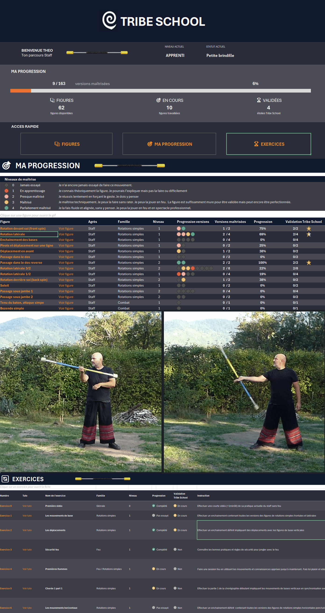
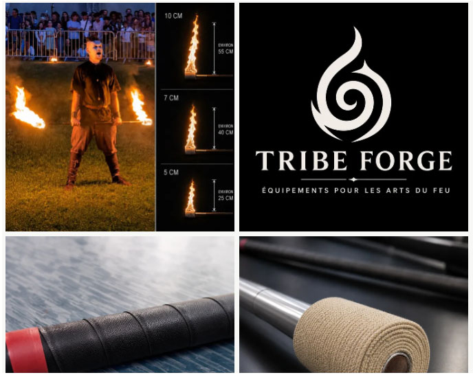

Apprendre le jonglage de feu et le bâton
Je transmets ma pratique du jonglage de feu au sein de Tribe School, une école en ligne
où vous pouvez apprendre le staff (bâton de feu) et progresser à votre rythme. Le bâton est l’agrès
actuellement enseigné ; d’autres disciplines pourront compléter l’offre à l’avenir.
Pour vous équiper, Tribe Forge propose des bâtons et des agrès artisanaux adaptés
à la pratique du jonglage et des arts du feu.
Apprendre le staff
Je suis professeur et co-fondateur de Tribe School, la première école en ligne dédiée à la pratique du jonglage de feu.
L’objectif est de proposer un apprentissage structuré et progressif,
accessible aussi bien aux débutants qu’aux pratiquants souhaitant approfondir leur technique.
Les cours s’appuient sur un répertoire de figures, des exercices ciblés,
des tutoriels et des défis permettant de progresser étape par étape.
Une méthode pour progresser
Tribe School propose un véritable parcours d’apprentissage, avec un système de progression permettant de suivre les figures maîtrisées et les compétences acquises au fil du temps.
Cours en ligne
Des cours collectifs pour découvrir de nouvelles figures, travailler des notions techniques et poser ses questions, complétés par des séances individuelles pour bénéficier de corrections et d’un accompagnement personnalisé.
Des contenus pour s’entraîner
Tutoriels, exercices, vidéos bonus, chorégraphies et autres ressources permettent de continuer à travailler entre les cours et de consolider les acquis.
Une communauté pour progresser ensemble
Au-delà des cours, Tribe School rassemble une communauté de pratiquants avec qui échanger, partager ses progrès et trouver la motivation pour continuer à avancer.

Choisir un staff
Depuis mes débuts, je conçois et fabrique moi-même une grande partie des agrès
et du matériel que j’utilise dans mes spectacles et dans ma pratique
du jonglage.
Avec Tribe-Forge, je propose ce matériel artisanal
et professionnel, conçu et testé pour répondre aux exigences de
la pratique du spectacle. Vous y trouverez notamment des agrès adaptés
aux techniques que je pratique et que j’enseigne au sein de Tribe School.
La boutique propose également une sélection d’autres agrès et
accessoires pour vous permettre de développer votre propre pratique.
N’hésitez pas à y faire un tour !
